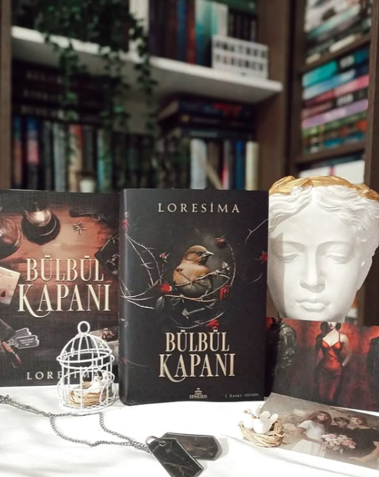
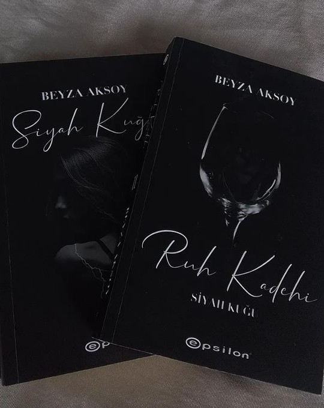

Bülbül Kapanı, dram, aşk ve aksiyon unsurlarını bir araya getiren bir romandır.
Hikaye, karanlık bir geçmişe sahip bir Türk askerinin yaşadığı zorlukları ve bu geçmişten kaçışını konu alır.

"Siyah Kuğu," Beyza Aksoy'un yazdığı bir romandır. Roman, genç bir kadının aşk, kayıplar ve içsel
yolculuğunu anlatır. Ana karakter, geçmişiyle yüzleşerek kendini keşfeder.